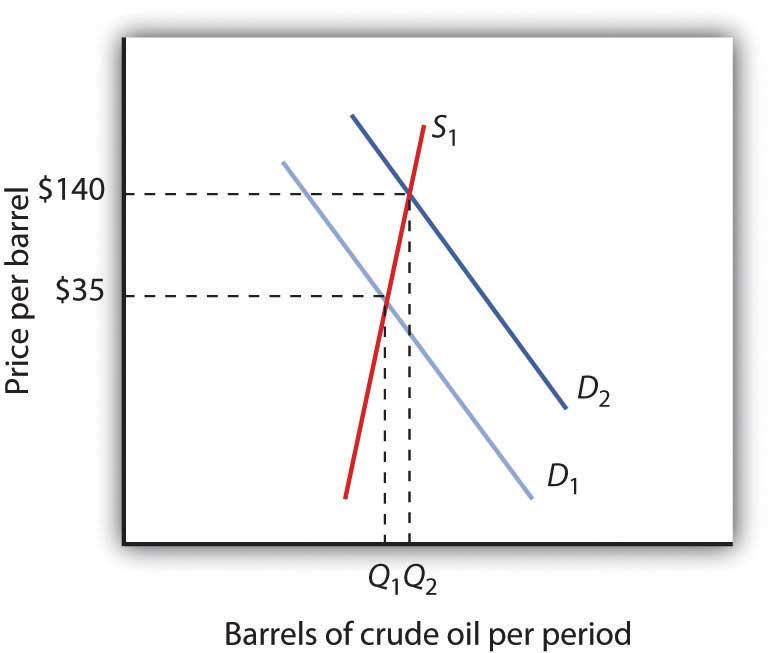
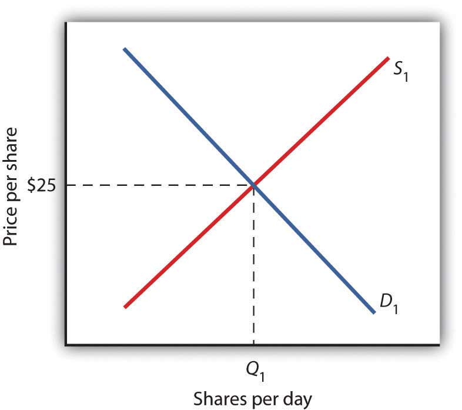
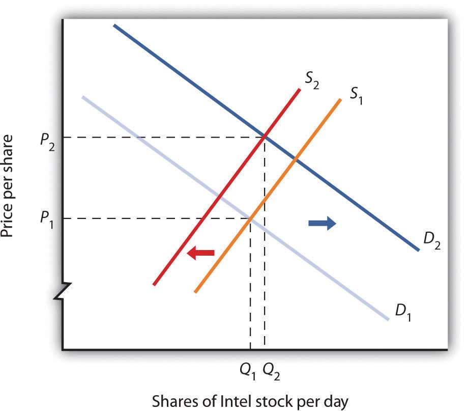
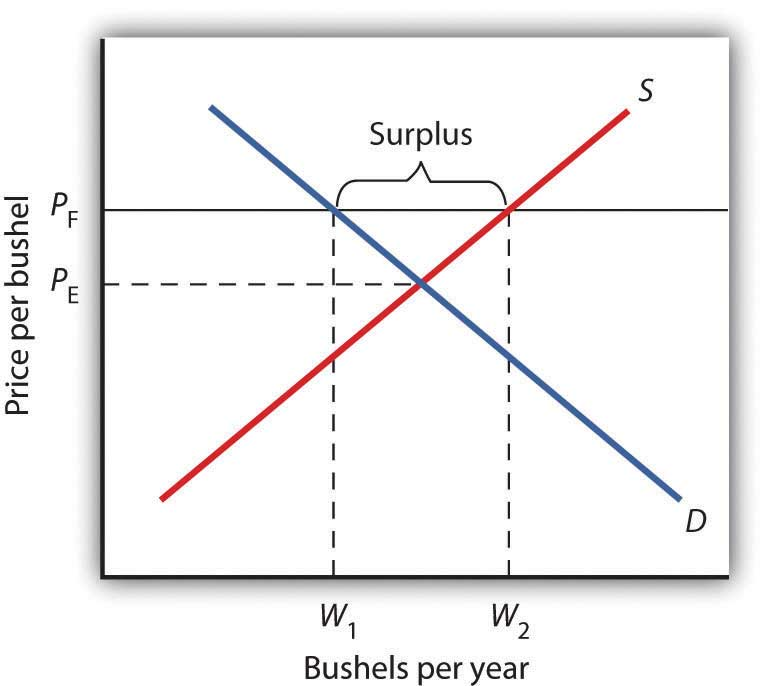
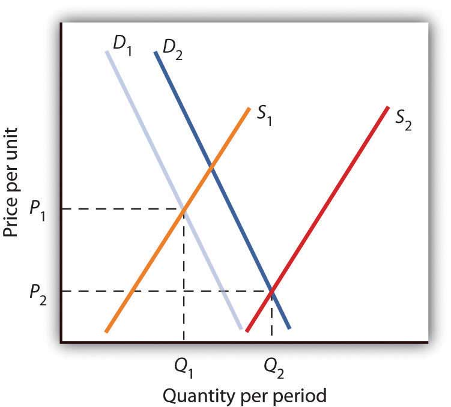
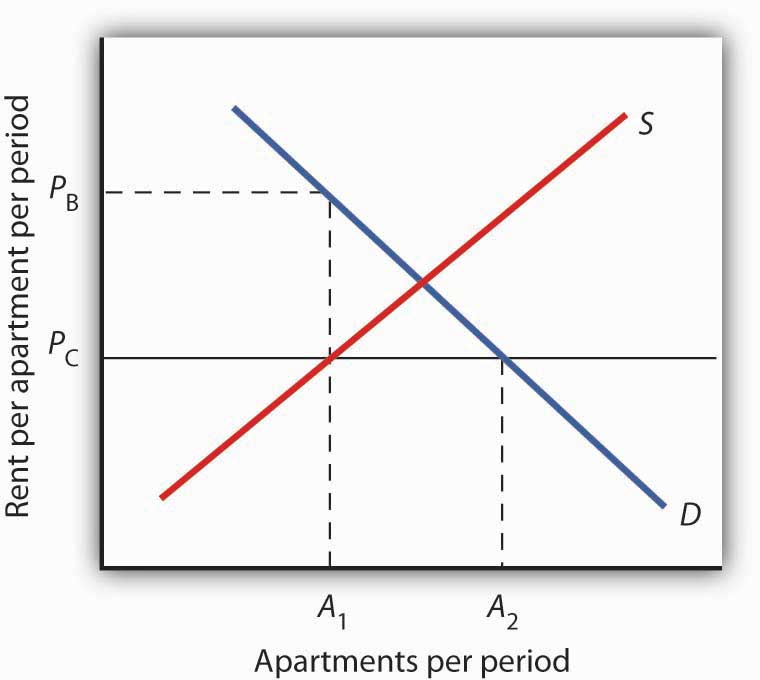

“Since the age of seven, I knew that I would be a musician. And from age fourteen, I knew that I would be a composer,” says Israeli-born Ofer Ben-Amots. What he did not know was that he would use computers to carry out his work. He is now a professor of music at Colorado College, and Dr. Ben-Amots’s compositions and operas have been performed in the United States, Europe, and Japan.
For over 20 years, he has used musical composition software in creating his music. “The output is extremely elegant. Performers enjoy looking at such a clear and clean score. The creation of parts out of a full score is as easy as pressing the <ENTER> key on the keyboard.” Changes can easily be inserted into the notation file, which eliminates the need for recopying. In addition, Dr. Ben-Amots uses computers for playback. “I can listen to a relatively accurate ‘digital performance’ of the score at any given point, with any tempo or instrumentation I choose. The sound quality has improved so much that digital files sound almost identical to real performance.” He can also produce CDs on his own and create podcasts so that anyone in the world can hear his music. He engages in self-publication of scores and self-marketing. “In my case, I get to keep the copyrights on all of my music. This would have been impossible ten to twelve years ago when composers transferred their rights to publishers. Home pages on the World Wide Web allow me to promote my own work.” Professor Ben-Amots also changed the way he teaches music composition. New application software, such as GarageBand, has opened the way for anyone interested to try to compose music. Whereas his music composition classes used to have music theory prerequisites, today his classes are open to all.
Dr. Ben-Amots started out in 1989 with a Macintosh SE30 that had 4 megabytes of random access memory (RAM) and an 80-megabyte hard drive. It cost him about $3,000. Today, he uses a Macintosh MacBook Pro with 4 gigabytes of memory (a bit in a computer has a value of 0 or 1, a byte is 8 bits, a megabyte is slightly more than 1 million bytes, and a gigabyte is slightly more than 1,000 megabytes), built-in DVD/CD burner, and wireless Internet connections. His new computer cost about $2,200. Put another way, his first computer had a cost per megabyte of RAM of about $750. His present computer costs about $0.75 per megabyte of RAM and is far more powerful. The dramatic rise in the power of personal computers as they fell so steeply in price is just one of the stories about markets we will tell in this chapter, which aims to help you understand how the model of demand and supply applies to the real world.
In the first section of this chapter, we will look at several markets that you are likely to have participated in or be familiar with—the market for personal computers, the markets for crude oil and for gasoline, and the stock market. You probably own or have access to a computer. We have all been affected by the sharp swings in the prices of oil and gasoline in recent years. The performance of the stock market is always a major news item and may affect you personally, if not now then in the future. The concepts of demand and supply go a long way in explaining the behavior of equilibrium prices and quantities in all of these markets. The purpose of this section is to allow you to practice using the model of demand and supply and to get you to start thinking about the myriad ways the model of demand and supply can be applied.
In the second part of the chapter we will look at markets in which the government plays a large role in determining prices. By legislating maximum or minimum prices, the government has kept the prices of certain goods below or above equilibrium. We will look at the arguments for direct government intervention in controlling prices as well as the consequences of such policies. As we shall see, preventing the price of a good from finding its own equilibrium often has consequences that may be at odds with the intentions of the policy makers who put the regulations in place.
In the third section of the chapter we will look at the market for health care. This market is important because how well (or poorly) it works can be a matter of life and death and because it has special characteristics. In particular, markets in which participants do not pay for goods directly but rather have insurers who then pay the suppliers of the goods, operate somewhat differently from those in which participants pay directly for their purchases. This extension of demand and supply analysis, while only scratching the surface on the issues associated with the market for health care, reveals much about how such markets operate. This analysis has become particularly important in the wake of the passage of the Patient Protection and Affordable Care Act in the United States in 2010—sometimes referred to (especially by opponents) as “Obamacare.”
A shift in either demand or supply, or in both, leads to a change in equilibrium price and equilibrium quantity. We begin this chapter by examining markets in which prices adjust quickly to changes in demand or supply: the market for personal computers, the markets for crude oil and gasoline, and the stock market. These markets are thus direct applications of the model of demand and supply.
In the 1960s, to speak of computers was to speak of IBM, the dominant maker of large mainframe computers used by business and government agencies. Then between 1976, when Apple Computer introduced its first desktop computer, and 1981, when IBM produced its first personal computers (PCs), the computer usage expanded dramatically. Only 8.2% of U. S. households owned a personal computer in 1984. By 2003, 62% did. After that, the U.S. Census Bureau began asking only about Internet usage. By 2009, more than two-thirds of households had home Internet access. The tools of demand and supply tell the story from an economic perspective.
Technological change has been breathtakingly swift in the computer industry. Because personal computers have changed so dramatically in performance and in the range of the functions they perform, we shall speak of “quality-adjusted” personal computers. The price per unit of quality-adjusted desktop computers fell by about half every 50 months during the period 1976–1989. In the first half of the 1990s, those prices fell by half every 28 months. In the second half of the 1990s, the “halving time” fell to every 24 months.Ilkka Tuomi, “The Lives and Death of Moore’s Law.” http://www.firstmonday.org/issues/issue7_11/tuomi/index. First Monday (http://www.firstmonday.org) is a peer-reviewed journal on the Internet.
There are other indicators of the phenomenal change in computers. Between 1993 and 1998, the Bureau of Labor Statistics estimates that central processing unit (CPU) speed rose 1,263%, system memory increased 1,500%, hard drive capacity soared by 3,700%, and monitor size went up 13%. It seems safe to say that the dizzying pace of change recorded in the 1990s has increased in this century. A “computer” today is not the same good as a “computer” even five years ago. To make them comparable, we must adjust for changes in quality.
Initially, most personal computers were manufactured by Apple or Compaq; both companies were very profitable. The potential for profits attracted IBM and other firms to the industry. Unlike large mainframe computers, personal computer clones turned out to be fairly easy to manufacture. As shown in Table 4.1 "Personal Computer Shipments, Market Percentage Shares by Vendors, World and United States, 2011", the top six personal computer manufacturers produced only 43.3% of the personal computers sold in the world in 2011, and the largest manufacturer, Hewlett-Packard (HP), sold only about 17.5% of the total in that year. This is a far cry from the more than 90% of the mainframe computer market that IBM once held. The market has become far more competitive.
Table 4.1 Personal Computer Shipments, Market Percentage Shares by Vendors, World and United States, 2011
| Company | Percentage of World Shipments | Company | Percentage of U.S. Shipments |
|---|---|---|---|
| HP | 17.5 | HP | 26.9 |
| Dell | 12.5 | Dell | 22.6 |
| Lenovo | 12.0 | Apple | 10.7 |
| Acer Group | 10.9 | Toshiba | 9.6 |
| Asus | 5.2 | Acer Group | 9.3 |
| Toshiba | 5.2 | Others | 20.9 |
| Others | 36.7 |
Source: “Gartner Says Worldwide PC Shipments Increased 2.3 Percent in Second Quarter of 2011,” Gartner Newsroom, July 13, 2011, http://www.gartner.com/it/page.jsp?id=1744216. Totals may not add due rounding.
Figure 4.1 "The Personal Computer Market" illustrates changes that have occurred in the computer market. The horizontal axis shows the quantity of quality-adjusted personal computers. Thus, the quantity axis can be thought of as a unit of computing power. Similarly, the price axis shows the price per unit of computing power. The rapid increase in the number of firms, together with dramatic technological improvements, led to an increase in supply, shifting the supply curve in Figure 4.1 "The Personal Computer Market" to the right from S1 to S2.
Figure 4.1 The Personal Computer Market

The supply curve for quality-adjusted personal computers shifted markedly to the right, reducing the equilibrium price from P1 to P2 and increasing the equilibrium quantity from Q1 to Q2 in 2011.
Demand also shifted to the right from D1 to D2, as incomes rose and new uses for computers, from e-mail and social networking to Voice over Internet Protocol (VoIP) and Radio Frequency ID (RFID) tags (which allow wireless tracking of commercial shipments via desktop computers), altered the preferences of consumer and business users. Because we observe a fall in equilibrium price and an increase in equilibrium quantity, we conclude that the rightward shift in supply has outweighed the rightward shift in demand. The power of market forces has profoundly affected the way we live and work. One indication of the increasing importance of computers was that in August 2011, Exxon Mobil, an oil company that had been largest company in the United States in terms of the value of its outstanding stock, was the surpassed by Apple Computer Inc., whose value reached $350 billion.
The market for crude oil took a radical turn in 1973. The price per barrel of crude oil quadrupled between 1973 and 1974. Price remained high until the early 1980s but fell back drastically and remained low for about two decades. In 2004, the price of oil began to move upward and by 2008 had reached $147 per barrel.
What caused the dramatic increase in gasoline and oil prices in 2008? It appeared to be increasing worldwide demand outpacing producers’ ability—or willingness—to increase production much. This increase in demand is illustrated in Figure 4.2 "Increasing Demand for Crude Oil".
Figure 4.2 Increasing Demand for Crude Oil
The price of oil was $35 per barrel at the beginning of 2004, as determined by the intersection of world demand, D1, and world supply, S1. Increasing world demand, prompted largely by increasing demand from China as well as from other countries, shifted world demand to D2, pushing the price as high as $140 per barrel by the middle of 2008.
Higher oil prices also increase the cost of producing virtually every good or service since the production of most goods requires transportation. These costs inevitably translate into higher prices for nearly all goods and services. Supply curves of the goods and services thus affected shift to the left, putting downward pressure on output and upward pressure on prices.
Graphically, the impact of higher gasoline prices on businesses that use gasoline is illustrated in Figure 4.3 "The Impact of Higher Gasoline Prices". Because higher gasoline prices increase the cost of doing business, they shift the supply curves for nearly all businesses to the left, putting upward pressure on prices and downward pressure on output. In the case shown here, the supply curve in a typical industry shifts from S1 to S2. This increases the equilibrium price from P1 to P2 and reduces the equilibrium quantity from Q1 to Q2.
Figure 4.3 The Impact of Higher Gasoline Prices

Higher gasoline prices increase the cost of producing virtually every good or service. In the case shown here, the supply curve in a typical industry shifts from S1 to S2. This increases the equilibrium price from P1 to P2 and reduces equilibrium quantity from Q1 to Q2.
As the world economy slowed dramatically in the second half of 2008, the demand curve for oil shifted to the left. By November 2008, the price per barrel had dropped to below $60 per barrel. As gas prices also subsided, so did the threat of higher prices in other industries.
The circular flow model suggests that capital, like other factors of production, is supplied by households to firms. Firms, in turn, pay income to those households for the use of their capital. Generally speaking, however, capital is actually owned by firms themselves. General Motors owns its assembly plants, and Wal-Mart owns its stores; these firms therefore own their capital. But firms, in turn, are owned by people—and those people, of course, live in households. It is through their ownership of firms that households own capital.
A firm may be owned by one individual (a sole proprietorshipA firm owned by one individual.), by several individuals (a partnershipA firm owned by several individuals.), or by shareholders who own stock in the firm (a corporationA firm owned by shareholders who own stock in the firm.). Although most firms in the United States are sole proprietorships or partnerships, the bulk of the nation’s total output (about 90%) is produced by corporations. Corporations also own most of the capital (machines, plants, buildings, and the like).
This section describes how the prices of shares of corporate stockShares in the ownership of a corporation., shares in the ownership of a corporation, are determined by the interaction of demand and supply. Ultimately, the same forces that determine the value of a firm’s stock determine the value of a sole proprietorship or partnership.
When a corporation needs funds to increase its capital or for other reasons, one means at its disposal is to issue new stock in the corporation. (Other means include borrowing funds or using past profits.) Once the new shares have been sold in what is called an initial public offering (IPO), the corporation receives no further funding as shares of its stock are bought and sold on the secondary market. The secondary market is the market for stocks that have been issued in the past, and the daily news reports about stock prices almost always refer to activity in the secondary market. Generally, the corporations whose shares are traded are not involved in these transactions.
The stock marketThe set of institutions in which shares of stock are bought and sold. is the set of institutions in which shares of stock are bought and sold. The New York Stock Exchange (NYSE) is one such institution. There are many others all over the world, such as the DAX in Germany and the Bolsa in Mexico. To buy or sell a share of stock, one places an order with a stockbroker who relays the order to one of the traders at the NYSE or at some other exchange.
The process through which shares of stock are bought and sold can seem chaotic. At many exchanges, traders with orders from customers who want to buy stock shout out the prices those customers are willing to pay. Traders with orders from customers who want to sell shout out offers of prices at which their customers are willing to sell. Some exchanges use electronic trading, but the principle is the same: if the price someone is willing to pay matches the price at which someone else is willing to sell, the trade is made. The most recent price at which a stock has traded is reported almost instantaneously throughout the world.
Figure 4.4 "Demand and Supply in the Stock Market" applies the model of demand and supply to the determination of stock prices. Suppose the demand curve for shares in Intel Corporation is given by D1 and the supply by S1. (Even though the total number of shares outstanding is fixed at any point in time, the supply curve is not vertical. Rather, the supply curve is upward sloping because it represents how many shares current owners are prepared to sell at each price, and that number will be greater at higher prices.) Suppose that these curves intersect at a price of $25, at which Q1 shares are traded each day. If the price were higher, more shares would be offered for sale than would be demanded, and the price would quickly fall. If the price were lower, more shares would be demanded than would be supplied, and the price would quickly rise. In general, we can expect the prices of shares of stock to move quickly to their equilibrium levels.
Figure 4.4 Demand and Supply in the Stock Market
The equilibrium price of stock shares in Intel Corporation is initially $25, determined by the intersection of demand and supply curves D1 and S1, at which Q1 million shares are traded each day.
The intersection of the demand and supply curves for shares of stock in a particular company determines the equilibrium price for a share of stock. But what determines the demand and supply for shares of a company’s stock?
The owner of a share of a company’s stock owns a share of the company, and, hence, a share of its profits; typically, a corporation will retain and reinvest some of its profits to increase its future profitability. The profits kept by a company are called retained earningsProfits kept by a company.. Profits distributed to shareholders are called dividendsProfits distributed to shareholders.. Because a share of stock gives its owner a claim on part of a company’s future profits, it follows that the expected level of future profits plays a role in determining the value of its stock.
Of course, those future profits cannot be known with certainty; investors can only predict what they might be, based on information about future demand for the company’s products, future costs of production, information about the soundness of a company’s management, and so on. Stock prices in the real world thus reflect estimates of a company’s profits projected into the future.
The downward slope of the demand curve suggests that at lower prices for the stock, more people calculate that the firm’s future earnings will justify the stock’s purchase. The upward slope of the supply curve tells us that as the price of the stock rises, more people conclude that the firm’s future earnings do not justify holding the stock and therefore offer to sell it. At the equilibrium price, the number of shares supplied by people who think holding the stock no longer makes sense just balances the number of shares demanded by people who think it does.
What factors, then, cause the demand or supply curves for shares of stocks to shift? The most important factor is a change in the expectations of a company’s future profits. Suppose Intel announces a new generation of computer chips that will lead to faster computers with larger memories. Current owners of Intel stock would adjust upward their estimates of what the value of a share of Intel stock should be. At the old equilibrium price of $25 fewer owners of Intel stock would be willing to sell. Since this would be true at every possible share price, the supply curve for Intel stock would shift to the left, as shown in Figure 4.5 "A Change in Expectations Affects the Price of Corporate Stock". Just as the expectation that a company will be more profitable shifts the supply curve for its stock to the left, that same change in expectations will cause more people to want to purchase the stock, shifting the demand curve to the right. In Figure 4.5 "A Change in Expectations Affects the Price of Corporate Stock", we see the supply curve shifting to the left, from S1 to S2, while the demand curve shifts to the right, from D1 to D2.
Figure 4.5 A Change in Expectations Affects the Price of Corporate Stock
If financial investors decide that a company is likely to be more profitable, then the supply of the stock shifts to the left (in this case, from S1 to S2), and the demand for the stock shifts to the right (in this case, from D1 to D2), resulting in an increase in price from P1 to P2.
Other factors may alter the price of an individual corporation’s share of stock or the level of stock prices in general. For example, demographic change and rising incomes have affected the demand for stocks in recent years. For example, with a large proportion of the U.S. population nearing retirement age and beginning to think about and plan for their lives during retirement, the demand for stocks has risen.
Information on the economy as a whole is also likely to affect stock prices. If the economy overall is doing well and people expect that to continue, they may become more optimistic about how profitable companies will be in general, and thus the prices of stocks will rise. Conversely, expectations of a sluggish economy, as happened in the fall of 2008, could cause stock prices in general to fall.
The stock market is bombarded with new information every minute of every day. Firms announce their profits of the previous quarter. They announce that they plan to move into a new product line or sell their goods in another country. We learn that the price of Company A’s good, which is a substitute for one sold by Company B, has risen. We learn that countries sign trade agreements, launch wars, or make peace. All of this information may affect stock prices because any information can affect how buyers and sellers value companies.
Suppose an airline announces that its earnings this year are lower than expected due to reduced ticket sales. The airline spokesperson gives no information on how the company plans to turn things around. Use the model of demand and supply to show and explain what is likely to happen to the price of the airline’s stock.
Oil markets have been on a roller coaster ride for the last few years. Even after the official start of the recession in the United States in December 2007, oil prices continued to climb, peaking in the summer of 2008 at over $130 per barrel. Although demand in the United States and Europe was already weakening, growth in the rest of the world, particularly in China and India, was still strong. Overall, demand was rising.
Oil prices dropped precipitously following the start of the financial crisis and the deepening of the recession in the fall of 2008. Within a few months, the price of oil had dropped to around $40 and was in the $70 to $80 range for much of the rest of 2009 and the first half of 2010.
The so-called Arab Spring actually began with demonstrations late in 2010 in Tunisia. They quickly spread to Egypt, Bahrain, Syria, Yemen, Algeria, Jordan, Morocco, and Yemen. There were demonstrations in Saudi Arabia, Kuwait, Lebanon, Mauritania, and Sudan. By the fall of 2011, the movement had toppled the regimes of Zine El Abidine Ben Ali in Tunisia, Hosni Mubarak in Egypt, and Muammar al-Gaddafi in Libya.
The movement had a large impact on oil prices as it raised questions about the security of oil supplies. The supply curve of oil shifted to the left, forcing the price upward. Not only were several key suppliers of oil affected, but at times the ability to transport oil through the Suez Canal was affected.
Oil prices rose to well over $100 per barrel by early 2011. They then began to subside again as some of the uprisings were subdued or ending, especially in the oil-rich Gulf countries. By the fall of 2011, oil prices had fallen about 20% as compared to earlier in the year.
The information given in the problem suggests that the airline’s profits are likely to fall below expectations. Current owners of the airline’s stock and potential buyers of the stock would adjust downward their estimates of what the value of the corporation’s stock should be. As a result the supply curve for the stock would increase, shifting it to the right, while the demand curve for the stock would decrease, shifting it to the left. As a result, equilibrium price of the stock falls from P1 to P2. What happens to equilibrium quantity depends on the extent to which each curve shifts. In the diagram, equilibrium quantity is shown to decrease from Q1 to Q2.
So far in this chapter and in the previous chapter, we have learned that markets tend to move toward their equilibrium prices and quantities. Surpluses and shortages of goods are short-lived as prices adjust to equate quantity demanded with quantity supplied.
In some markets, however, governments have been called on by groups of citizens to intervene to keep prices of certain items higher or lower than what would result from the market finding its own equilibrium price. In this section we will examine agricultural markets and apartment rental markets—two markets that have often been subject to price controls. Through these examples, we will identify the effects of controlling prices. In each case, we will look at reasons why governments have chosen to control prices in these markets and the consequences of these policies.
Governments often seek to assist farmers by setting price floors in agricultural markets. A minimum allowable price set above the equilibrium price is a price floorA minimum allowable price set above the equilibrium price.. With a price floor, the government forbids a price below the minimum. (Notice that, if the price floor were for whatever reason set below the equilibrium price, it would be irrelevant to the determination of the price in the market since nothing would prohibit the price from rising to equilibrium.) A price floor that is set above the equilibrium price creates a surplus.
Figure 4.6 "Price Floors in Wheat Markets" shows the market for wheat. Suppose the government sets the price of wheat at PF. Notice that PF is above the equilibrium price of PE. At PF, we read over to the demand curve to find that the quantity of wheat that buyers will be willing and able to purchase is W1 bushels. Reading over to the supply curve, we find that sellers will offer W2 bushels of wheat at the price floor of PF. Because PF is above the equilibrium price, there is a surplus of wheat equal to (W2 − W1) bushels. The surplus persists because the government does not allow the price to fall.
Figure 4.6 Price Floors in Wheat Markets
A price floor for wheat creates a surplus of wheat equal to (W2 - W1) bushels.
Why have many governments around the world set price floors in agricultural markets? Farming has changed dramatically over the past two centuries. Technological improvements in the form of new equipment, fertilizers, pesticides, and new varieties of crops have led to dramatic increases in crop output per acre. Worldwide production capacity has expanded markedly. As we have learned, technological improvements cause the supply curve to shift to the right, reducing the price of food. While such price reductions have been celebrated in computer markets, farmers have successfully lobbied for government programs aimed at keeping their prices from falling.
While the supply curve for agricultural goods has shifted to the right, the demand has increased with rising population and with rising income. But as incomes rise, people spend a smaller and smaller fraction of their incomes on food. While the demand for food has increased, that increase has not been nearly as great as the increase in supply. Figure 4.7 "Supply and Demand Shifts for Agricultural Products" shows that the supply curve has shifted much farther to the right, from S1 to S2, than the demand curve has, from D1 to D2. As a result, equilibrium quantity has risen dramatically, from Q1 to Q2, and equilibrium price has fallen, from P1 to P2.
On top of this long-term historical trend in agriculture, agricultural prices are subject to wide swings over shorter periods. Droughts or freezes can sharply reduce supplies of particular crops, causing sudden increases in prices. Demand for agricultural goods of one country can suddenly dry up if the government of another country imposes trade restrictions against its products, and prices can fall. Such dramatic shifts in prices and quantities make incomes of farmers unstable.
Figure 4.7 Supply and Demand Shifts for Agricultural Products
A relatively large increase in the supply of agricultural products, accompanied by a relatively small increase in demand, has reduced the price received by farmers and increased the quantity of agricultural goods.
The Great Depression of the 1930s led to a major federal role in agriculture. The Depression affected the entire economy, but it hit farmers particularly hard. Prices received by farmers plunged nearly two-thirds from 1930 to 1933. Many farmers had a tough time keeping up mortgage payments. By 1932, more than half of all farm loans were in default.
Farm legislation passed during the Great Depression has been modified many times, but the federal government has continued its direct involvement in agricultural markets. This has meant a variety of government programs that guarantee a minimum price for some types of agricultural products. These programs have been accompanied by government purchases of any surplus, by requirements to restrict acreage in order to limit those surpluses, by crop or production restrictions, and the like.
To see how such policies work, look back at Figure 4.6 "Price Floors in Wheat Markets". At PF, W2 bushels of wheat will be supplied. With that much wheat on the market, there is market pressure on the price of wheat to fall. To prevent price from falling, the government buys the surplus of (W2 - W1) bushels of wheat, so that only W1 bushels are actually available to private consumers for purchase on the market. The government can store the surpluses or find special uses for them. For example, surpluses generated in the United States have been shipped to developing countries as grants-in-aid or distributed to local school lunch programs. As a variation on this program, the government can require farmers who want to participate in the price support program to reduce acreage in order to limit the size of the surpluses.
After 1973, the government stopped buying the surpluses (with some exceptions) and simply guaranteed farmers a “target price.” If the average market price for a crop fell below the crop’s target price, the government paid the difference. If, for example, a crop had a market price of $3 per unit and a target price of $4 per unit, the government would give farmers a payment of $1 for each unit sold. Farmers would thus receive the market price of $3 plus a government payment of $1 per unit. For farmers to receive these payments, they had to agree to remove acres from production and to comply with certain conservation provisions. These restrictions sought to reduce the size of the surplus generated by the target price, which acted as a kind of price floor.
What are the effects of such farm support programs? The intention is to boost and stabilize farm incomes. But, with price floors, consumers pay more for food than they would otherwise, and governments spend heavily to finance the programs. With the target price approach, consumers pay less, but government financing of the program continues. U.S. federal spending for agriculture averaged well over $22 billion per year between 2003 and 2007, roughly $70 per person.
Help to farmers has sometimes been justified on the grounds that it boosts incomes of “small” farmers. However, since farm aid has generally been allotted on the basis of how much farms produce rather than on a per-farm basis, most federal farm support has gone to the largest farms. If the goal is to eliminate poverty among farmers, farm aid could be redesigned to supplement the incomes of small or poor farmers rather than to undermine the functioning of agricultural markets.
In 1996, the U.S. Congress passed the Federal Agriculture Improvement and Reform Act of 1996, or FAIR. The thrust of the new legislation was to do away with the various programs of price support for most crops and hence provide incentives for farmers to respond to market price signals. To protect farmers through a transition period, the act provided for continued payments that were scheduled to decline over a seven-year period. However, with prices for many crops falling in 1998, the U.S. Congress passed an emergency aid package that increased payments to farmers. In 2008, as farm prices reached record highs, Congress passed a farm bill that increased subsidy payments to $40 billion. It did, however, for the first time limit payments to the wealthiest farmers. Individual farmers whose farm incomes exceed $750,000 (or $1.5 million for couples) would be ineligible for some subsidy programs.
The purpose of rent control is to make rental units cheaper for tenants than they would otherwise be. Unlike agricultural price controls, rent control in the United States has been largely a local phenomenon, although there were national rent controls in effect during World War II. Currently, about 200 cities and counties have some type of rent control provisions, and about 10% of rental units in the United States are now subject to price controls. New York City’s rent control program, which began in 1943, is among the oldest in the country. Many other cities in the United States adopted some form of rent control in the 1970s. Rent controls have been pervasive in Europe since World War I, and many large cities in poorer countries have also adopted rent controls.
Rent controls in different cities differ in terms of their flexibility. Some cities allow rent increases for specified reasons, such as to make improvements in apartments or to allow rents to keep pace with price increases elsewhere in the economy. Often, rental housing constructed after the imposition of the rent control ordinances is exempted. Apartments that are vacated may also be decontrolled. For simplicity, the model presented here assumes that apartment rents are controlled at a price that does not change.
Figure 4.8 Effect of a Price Ceiling on the Market for Apartments

A price ceiling on apartment rents that is set below the equilibrium rent creates a shortage of apartments equal to (A2 − A1) apartments.
Figure 4.8 "Effect of a Price Ceiling on the Market for Apartments" shows the market for rental apartments. Notice that the demand and supply curves are drawn to look like all the other demand and supply curves you have encountered so far in this text: the demand curve is downward-sloping and the supply curve is upward-sloping.
The demand curve shows that a higher price (rent) reduces the quantity of apartments demanded. For example, with higher rents, more young people will choose to live at home with their parents. With lower rents, more will choose to live in apartments. Higher rents may encourage more apartment sharing; lower rents would induce more people to live alone.
The supply curve is drawn to show that as rent increases, property owners will be encouraged to offer more apartments to rent. Even though an aerial photograph of a city would show apartments to be fixed at a point in time, owners of those properties will decide how many to rent depending on the amount of rent they anticipate. Higher rents may also induce some homeowners to rent out apartment space. In addition, renting out apartments implies a certain level of service to renters, so that low rents may lead some property owners to keep some apartments vacant.
Rent control is an example of a price ceilingA maximum allowable price., a maximum allowable price. With a price ceiling, the government forbids a price above the maximum. A price ceiling that is set below the equilibrium price creates a shortage that will persist.
Suppose the government sets the price of an apartment at PC in Figure 4.8 "Effect of a Price Ceiling on the Market for Apartments". Notice that PC is below the equilibrium price of PE. At PC, we read over to the supply curve to find that sellers are willing to offer A1 apartments. Reading over to the demand curve, we find that consumers would like to rent A2 apartments at the price ceiling of PC. Because PC is below the equilibrium price, there is a shortage of apartments equal to (A2 - A1). (Notice that if the price ceiling were set above the equilibrium price it would have no effect on the market since the law would not prohibit the price from settling at an equilibrium price that is lower than the price ceiling.)
Figure 4.9 The Unintended Consequences of Rent Control
Controlling apartment rents at PC creates a shortage of (A2 − A1) apartments. For A1 apartments, consumers are willing and able to pay PB, which leads to various “backdoor” payments to apartment owners.
If rent control creates a shortage of apartments, why do some citizens nonetheless clamor for rent control and why do governments often give in to the demands? The reason generally given for rent control is to keep apartments affordable for low- and middle-income tenants.
But the reduced quantity of apartments supplied must be rationed in some way, since, at the price ceiling, the quantity demanded would exceed the quantity supplied. Current occupants may be reluctant to leave their dwellings because finding other apartments will be difficult. As apartments do become available, there will be a line of potential renters waiting to fill them, any of whom is willing to pay the controlled price of PC or more. In fact, reading up to the demand curve in Figure 4.9 "The Unintended Consequences of Rent Control" from A1 apartments, the quantity available at PC, you can see that for A1 apartments, there are potential renters willing and able to pay PB. This often leads to various “backdoor” payments to apartment owners, such as large security deposits, payments for things renters may not want (such as furniture), so-called “key” payments (“The monthly rent is $500 and the key price is $3,000”), or simple bribes.
In the end, rent controls and other price ceilings often end up hurting some of the people they are intended to help. Many people will have trouble finding apartments to rent. Ironically, some of those who do find apartments may actually end up paying more than they would have paid in the absence of rent control. And many of the people that the rent controls do help (primarily current occupants, regardless of their income, and those lucky enough to find apartments) are not those they are intended to help (the poor). There are also costs in government administration and enforcement.
Because New York City has the longest history of rent controls of any city in the United States, its program has been widely studied. There is general agreement that the rent control program has reduced tenant mobility, led to a substantial gap between rents on controlled and uncontrolled units, and favored long-term residents at the expense of newcomers to the city.Richard Arnott, “Time for Revisionism on Rent Control,” Journal of Economic Perspectives 9(1) (Winter, 1995): 99–120. These distortions have grown over time, another frequent consequence of price controls.
A more direct means of helping poor tenants, one that would avoid interfering with the functioning of the market, would be to subsidize their incomes. As with price floors, interfering with the market mechanism may solve one problem, but it creates many others at the same time.
A minimum wage law is another example of a price floor. Draw demand and supply curves for unskilled labor. The horizontal axis will show the quantity of unskilled labor per period and the vertical axis will show the hourly wage rate for unskilled workers, which is the price of unskilled labor. Show and explain the effect of a minimum wage that is above the equilibrium wage.
Government support for corn dates back to the Agricultural Act of 1938 and, in one form or another, has been part of agricultural legislation ever since. Types of supports have ranged from government purchases of surpluses to target pricing, land set asides, and loan guarantees. According to one estimate, the U.S. government spent nearly $42 billion to support corn between 1995 and 2004.
Then, during the period of rising oil prices of the late 1970s and mounting concerns about dependence on foreign oil from volatile regions in the world, support for corn, not as a food, but rather as an input into the production of ethanol—an alternative to oil-based fuel—began. Ethanol tax credits were part of the Energy Act of 1978. Since 1980, a tariff of 50¢ per gallon against imported ethanol, even higher today, has served to protect domestic corn-based ethanol from imported ethanol, in particular from sugar-cane-based ethanol from Brazil.
The Energy Policy Act of 2005 was another milestone in ethanol legislation. Through loan guarantees, support for research and development, and tax credits, it mandated that 4 billion gallons of ethanol be used by 2006 and 7.5 billion gallons by 2012. Ethanol production had already reached 6.5 billion gallons by 2007, so new legislation in 2007 upped the ante to 15 billion gallons by 2015.
Beyond the increased amount the government is spending to support corn and corn-based ethanol, criticism of the policy has three major prongs:
Some of these criticisms may be contested as exaggerated: Will the ratio of energy-in to energy-out improve as new technologies emerge for producing ethanol? Did not other factors, such as weather and rising food demand worldwide, contribute to higher grain prices? Nonetheless, it is clear that corn-based ethanol is no free lunch. It is also clear that the end of government support for corn is nowhere to be seen.
Sources: Alexei Barrionuevo, “Mountains of Corn and a Sea of Farm Subsidies,” New York Times, November 9, 2005, online version; David Freddoso, “Children of the Corn,” National Review Online, May 6, 2008; C. Ford Runge and Benjamin Senauer, “How Biofuels Could Starve the Poor,” Foreign Affairs, May/June 2007, online version; Michael Grunwald, “The Clean Energy Scam,” Time 171:14 (April 7, 2008): 40–45.
A minimum wage (Wmin) that is set above the equilibrium wage would create a surplus of unskilled labor equal to (L2 - L1). That is, L2 units of unskilled labor are offered at the minimum wage, but companies only want to use L1 units at that wage. Because unskilled workers are a substitute for a skilled workers, forcing the price of unskilled workers higher would increase the demand for skilled labor and thus increase their wages.
There has been much discussion over the past three decades about the health-care problem in the United States. Much of this discussion has focused on rising spending for health care. In this section, we will apply the model of demand and supply to health care to see what we can learn about some of the reasons behind rising spending in this important sector of the economy.
Figure 4.10 "Health-Care Spending as a Percentage of U.S. Output, 1960–2009" shows the share of U.S. output devoted to health care since 1960. In 1960, about 5% of total output was devoted to health care; by 2009 this share had risen to 17.6%. That means that we are devoting more of our spending to health care and less to other goods and services.
The Affordable Care Act of 2010 dramatically impacted health care services. Among its provisions is a requirement that individuals purchase health insurance (the so-called individual mandate). That provision may well result in the entire Act being ruled unconstitutional by the courts. As this book went to press, the Act was pending before the court system, and a ruling against it, or at least against parts of it, seemed possible.
The Act requires insurance companies to provide coverage for children on their parent’s policies up to the age of 26. It also bars health insurance companies from denying coverage based on pre-existing conditions.
Provisions of the Act are extensive. It applies to virtually every aspect of health care services. It allows people to acquire health care insurance regardless of pre-existing conditions. It also allows employers to opt out of providing health insurance and to pay a fee instead.
Figure 4.10 Health-Care Spending as a Percentage of U.S. Output, 1960–2009

Health care’s share of total U.S. output rose from about 5% in 1960 to 17.6% in 2009.
Data for period 1960–1992 from Health Care Finance Association (which was the predecessor to the Centers for Medicare and Medicaid Services); Data for period 1993–2009 from Centers for Medicare and Medicaid Services, Office of the Actuary: National Health Statistics Group https://www.cms.gov/NationalHealthExpendData/downloads/tables.pdf.
Why were Americans willing to increase their spending on health care so dramatically? The model of demand and supply gives us part of the answer. As we apply the model to this problem, we will also gain a better understanding of the role of prices in a market economy.
Figure 4.11 Total Spending for Physician Office Visits

Total spending on physician office visits is $30 per visit multiplied by 1,000,000 visits per week, which equals $30,000,000. It is the shaded area bounded by price and quantity.
When we speak of “health care,” we are speaking of the entire health-care industry. This industry produces services ranging from heart transplant operations to therapeutic massages; it produces goods ranging from X-ray machines to aspirin tablets. Clearly each of these goods and services is exchanged in a particular market. To assess the market forces affecting health care, we will focus first on just one of these markets: the market for physician office visits. When you go to the doctor, you are part of the demand for these visits. Your doctor, by seeing you, is part of the supply.
Figure 4.11 "Total Spending for Physician Office Visits" shows the market, assuming that it operates in a fashion similar to other markets. The demand curve D1 and the supply curve S1 intersect at point E, with an equilibrium price of $30 per office visit. The equilibrium quantity of office visits per week is 1,000,000.
We can use the demand and supply graph to show total spending, which equals the price per unit (in this case, $30 per visit) times the quantity consumed (in this case, 1,000,000 visits per week). Total spending for physician office visits thus equals $30,000,000 per week ($30 times 1,000,000 visits). We show total spending as the area of a rectangle bounded by the price and the quantity. It is the shaded region in Figure 4.11 "Total Spending for Physician Office Visits".
The picture in Figure 4.11 "Total Spending for Physician Office Visits" misses a crucial feature of the market. Most people in the United States have health insurance, provided either by private firms, by private purchases, or by the government. With health insurance, people agree to pay a fixed amount to the insurer in exchange for the insurer’s agreement to pay for most of the health-care expenses they incur. While insurance plans differ in their specific provisions, let us suppose that all individuals have plans that require them to pay $10 for an office visit; the insurance company will pay the rest.
How will this insurance affect the market for physician office visits? If it costs only $10 for a visit instead of $30, people will visit their doctors more often. The quantity of office visits demanded will increase. In Figure 4.12 "Total Spending for Physician Office Visits Covered by Insurance", this is shown as a movement along the demand curve. Think about your own choices. When you get a cold, do you go to the doctor? Probably not, if it is a minor cold. But if you feel like you are dying, or wish you were, you probably head for the doctor. Clearly, there are lots of colds in between these two extremes. Whether you drag yourself to the doctor will depend on the severity of your cold and what you will pay for a visit. At a lower price, you are more likely to go to the doctor; at a higher price, you are less likely to go.
In the case shown, the quantity of office visits rises to 1,500,000 per week. But that suggests a potential problem. The quantity of visits supplied at a price of $30 per visit was 1,000,000. According to supply curve S1, it will take a price of $50 per visit to increase the quantity supplied to 1,500,000 visits (Point F on S1). But consumers—patients—pay only $10.
Insurers make up the difference between the fees doctors receive and the price patients pay. In our example, insurers pay $40 per visit of insured patients to supplement the $10 that patients pay. When an agent other than the seller or the buyer pays part of the price of a good or service, we say that the agent is a third-party payerAn agent other than the seller or the buyer who pays part of the price of a good or service..
Notice how the presence of a third-party payer affects total spending on office visits. When people paid for their own visits, and the price equaled $30 per visit, total spending equaled $30 million per week. Now doctors receive $50 per visit and provide 1,500,000 visits per week. Total spending has risen to $75 million per week ($50 times 1,500,000 visits, shown by the darkly shaded region plus the lightly shaded region).
Figure 4.12 Total Spending for Physician Office Visits Covered by Insurance

With insurance, the quantity of physician office visits demanded rises to 1,500,000. The supply curve shows that it takes a price of $50 per visit to increase the quantity supplied to 1,500,000 visits. Patients pay $10 per visit and insurance pays $40 per visit. Total spending rises to $75,000,000 per week, shown by the darkly shaded region plus the lightly shaded region.
The response described in Figure 4.12 "Total Spending for Physician Office Visits Covered by Insurance" holds for many different types of goods and services covered by insurance or otherwise paid for by third-party payers. For example, the availability of scholarships and subsidized tuition at public and private universities increases the quantity of education demanded and the total expenditures on higher education. In markets with third-party payers, an equilibrium is achieved, but it is not at the intersection of the demand and supply curves. The effect of third-party payers is to decrease the price that consumers directly pay for the goods and services they consume and to increase the price that suppliers receive. Consumers use more than they would in the absence of third-party payers, and providers are encouraged to supply more than they otherwise would. The result is increased total spending.
The provision of university education through taxpayer-supported state universities is another example of a market with a third-party payer. Use the model of demand and supply to discuss the impact this has on the higher education market. Specifically, draw a graph similar to Figure 4.12 "Total Spending for Physician Office Visits Covered by Insurance". How would you label the axes? Show the equilibrium price and quantity in the absence of a third-party payer and indicate total spending on education. Now show the impact of lower tuition As a result of state support for education. How much education do students demand at the lower tuition? How much tuition must educational institutions receive to produce that much education? How much spending on education will occur? Compare total spending before and after a third-party payer enters this market.
The health-care industry presents us with a dilemma. Clearly, it makes sense for people to have health insurance. Just as clearly, health insurance generates a substantial increase in spending for health care. If that spending is to be limited, some mechanism must be chosen to do it. One mechanism would be to require patients to pay a larger share of their own health-care consumption directly, reducing the payments made by third-party payers. Allowing people to accumulate tax-free private medical savings accounts is one way to do this. Another option is to continue the current trend to use insurance companies as the agents that limit spending. A third option is government regulation; this Case in Point describes how the state of Oregon tried to limit health-care spending by essentially refusing to be a third-party payer for certain services.
Like all other states, Oregon has wrestled with the problem of soaring Medicaid costs. Its solution to the problem illustrates some of the choices society might make in seeking to reduce health-care costs.
Oregon used to have a plan similar to plans in many other states. Households whose incomes were lower than 50% of the poverty line qualified for Medicaid. In 1987, the state began an effort to manage its Medicaid costs. It decided that it would no longer fund organ transplants and that it would use the money saved to give better care to pregnant women. The decision turned out to be a painful one; the first year, a seven-year-old boy with leukemia, who might have been saved with a bone marrow transplant, died. But state officials argued that the shift of expenditures to pregnant women would ultimately save more lives.
The state gradually expanded its concept of determining what services to fund and what services not to fund. It collapsed a list of 10,000 different diagnoses that had been submitted to its Medicaid program in the past into a list of more than 700 condition-treatment pairs. One such pair, for example, is appendicitis-appendectomy. Health-care officials then ranked these pairs in order of priority. The rankings were based on such factors as the seriousness of a particular condition and the cost and efficacy of treatments. The state announced that it would provide Medicaid to all households below the poverty line, but that it would not fund any procedure ranked below a certain level, initially number 588 on its list. The plan also set a budget limit for any one year; if spending rose above that limit, the legislature must appropriate additional money or drop additional procedures from the list of those covered by the plan. The Oregon Health Plan officially began operation in 1994.
While the Oregon plan has been applied only to households below the poverty line that are not covered by other programs, it suggests a means of reducing health-care spending. Clearly, if part of the health-care problem is excessive provision of services, a system designed to cut services must determine what treatments not to fund.
Professors Jonathan Oberlander, Theodore Marmor, and Lawrence Jacobs studied the impact of this plan in practice through the year 2000 and found that, in contrast to initial expectations, excluded procedures were generally ones of marginal medical value, so the “line in the sand” had little practical significance. In addition, they found that patients were often able to receive supposedly excluded services when physicians, for example, treated an uncovered illness in conjunction with a covered one. During the period of the study, the number of people covered by the plan expanded substantially and yet rationing of services essentially did not occur. How do they explain this seeming contradiction? Quite simply: state government increased revenues from various sources to support the plan. Indeed, they argue that, because treatments that might not be included were explicitly stated, political pressure made excluding them even more difficult and may have inadvertently increased the cost of the program.
In the early 2000s, Oregon, like many other states, confronted severe budgetary pressures. To limit spending, it chose the perhaps less visible strategy of reducing the number of people covered through the plan. Once serving more than 100,000 people, budget cuts reduced the number served to about 17,000. Whereas in 1996, 11% of Oregonians lacked health insurance, in 2008 16% did.
Trailblazing again, in 2008 Oregon realized that its budget allowed room for coverage for a few thousand additional people. But how to choose among the 130,000 eligibles? The solution: to hold a lottery. More than 90,000 people queued up, hoping to be lucky winners.
Sources: Jonathan Oberlander, Theodore Marmor, and Lawrence Jacobs, “Rationing Medical Care: Rhetoric and Reality in the Oregon Health Plan,” Canadian Medical Association Journal 164: 11 (May 29, 2001): 1583–1587; William Yardley, “Drawing Lots for Health Care,” The New York Times, March 13, 2008: p. A12.
Without a third-party payer for education, the graph shows equilibrium tuition of P1 and equilibrium quantity of education of Q1. State support for education lowers tuition that students pay to P2. As a result, students demand Q2 courses per year. To provide that amount of education, educational institutions require tuition per course of P3. Without a third-party payer, spending on education is 0P1EQ1. With a third-party payer, spending rises to 0P3FQ2.

In this chapter we used the tools of demand and supply to understand a wide variety of market outcomes. We learned that technological change and the entry of new sellers has caused the supply curve of personal computers to shift markedly to the right, thereby reducing equilibrium price and increasing equilibrium quantity. Market forces have made personal computers a common item in offices and homes.
Crude oil and gasoline prices soared in 2008 and then fell back, rising again in 2011 as a result of the disruption created by the Arab Spring. We looked at the causes of these increases as well as their impacts. Crude oil prices rose in large part As a result of increased demand, particularly from China. Higher prices for crude oil led to higher prices for gasoline. Those higher prices not only hurt consumers of gasoline, they also put upward pressure on the prices of a wide range of goods and services. Crude oil and gasoline prices then decreased dramatically in the last part of 2008, as world growth declined.
The model of demand and supply also explains the determination of stock prices. The price per share of corporate stock reflects the market’s estimate of the expected profitability of the firm. Any information about the firm that causes potential buyers or current owners of corporate stock to reevaluate how profitable they think the firm is, or will be, will cause the equilibrium price of the stock to change.
We then examined markets in which some form of government price control keeps price permanently above or below equilibrium. A price floor leads to persistent surpluses because it is set above the equilibrium price, whereas a price ceiling, because it is set below the equilibrium price, leads to persistent shortages. We saw that interfering with the market mechanism may solve one problem but often creates other problems at the same time. We discussed what some of these unintended consequences might be. For example, agricultural price floors aimed at boosting farm income have also raised prices for consumers and cost taxpayers dearly, and the bulk of government payments have gone to large farms. Rent controls have lowered rents, but they have also reduced the quantity of rental housing supplied, created shortages, and sometimes led to various forms of “backdoor” payments, which sometimes force the price of rental housing above what would exist in the absence of controls.
Finally, we looked at the market for health care and a special feature behind demand and supply in this market that helps to explain why the share of output of the United States that is devoted to health care has risen. Health care is an example of a market in which there are third-party payers (primarily private insurers and the government). With third-party payers the quantity of health-care services consumed rises, as does health-care spending.
Problems 1–4 are based on the following demand and supply schedules for corn (all quantities are in millions of bushels per year).
| Price per bushel | Quantity demanded | Quantity supplied |
|---|---|---|
| $0 | 6 | 0 |
| 1 | 5 | 1 |
| 2 | 4 | 2 |
| 3 | 3 | 3 |
| 4 | 2 | 4 |
| 5 | 1 | 5 |
| 6 | 0 | 6 |
Problems 5–9 are based on the following hypothetical demand and supply curves for apartments
| Rent/Month |
Number of Apts. Demanded/Month |
Number of Apts. Supplied/Month |
|---|---|---|
| $0 | 120,000 | 0 |
| 200 | 100,000 | 20,000 |
| 400 | 80,000 | 40,000 |
| 600 | 60,000 | 60,000 |
| 800 | 40,000 | 80,000 |
| 1000 | 20,000 | 100,000 |
| 1200 | 0 | 120,000 |